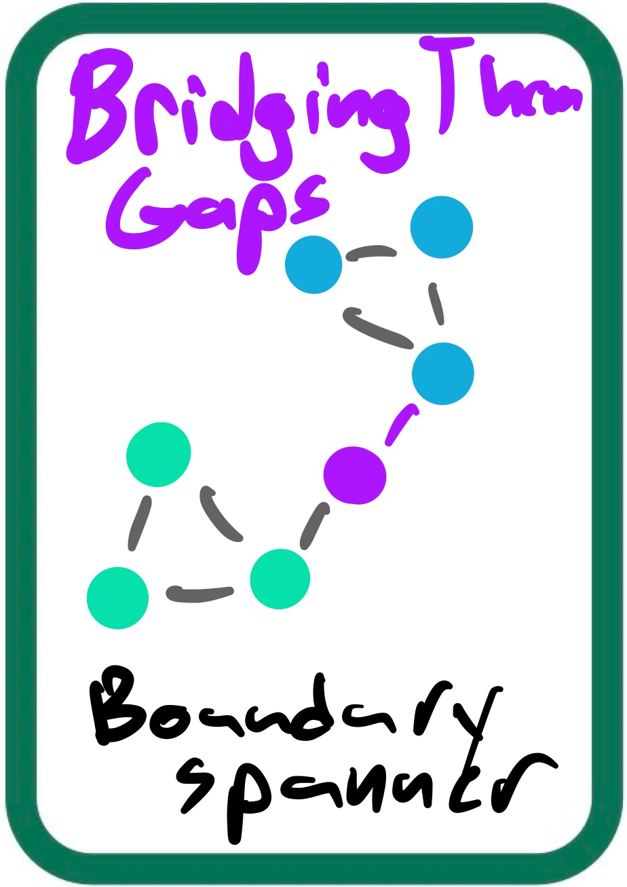
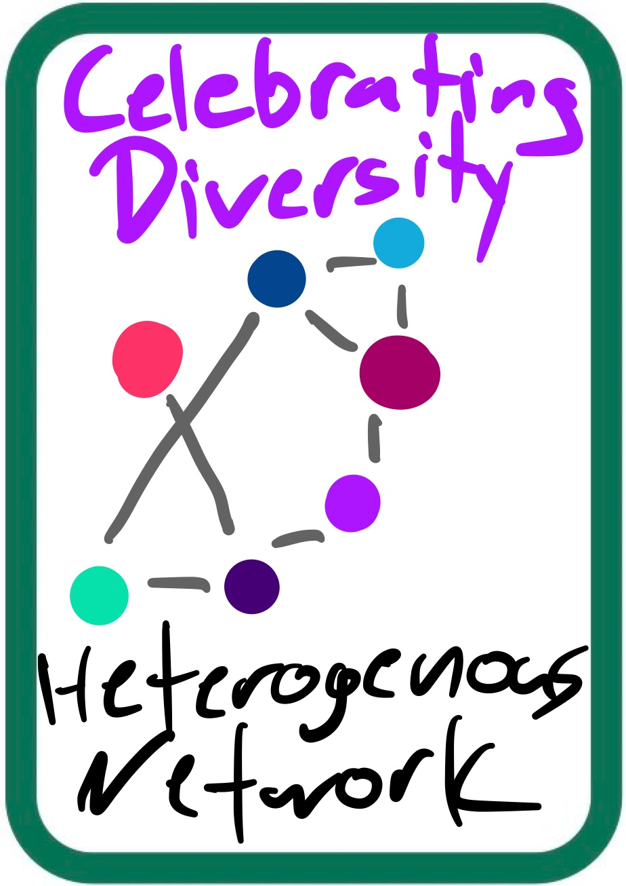
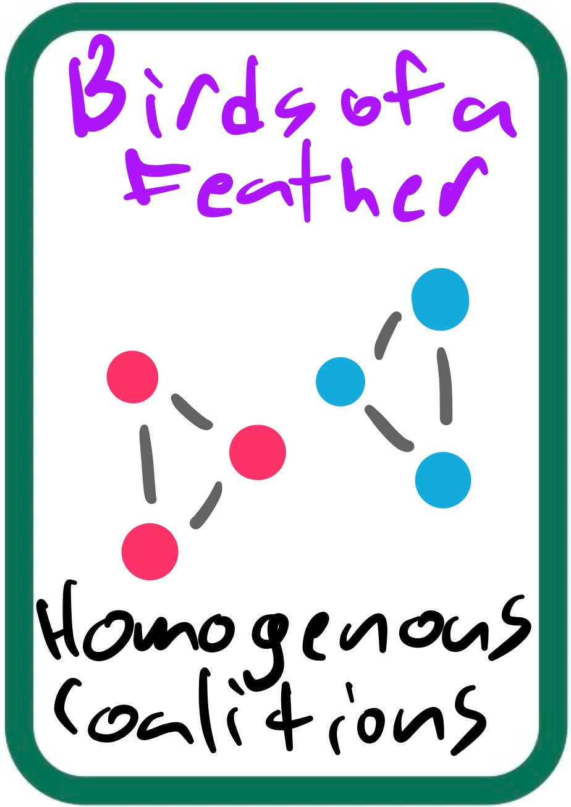

We are building new senses for groups, so that what they learn to see, they can learn to value.
@Javeline · first community: Liberating Structures · built as a NAOMS app with Mujo
A visual edition of Certified Practitioner, response to Kitestring draft 3, version 2. Where this edition and that document differ, the document wins. D-numbers point to its Decisions and numbers table.



Certified Practitioner is a community-owned certification program. It makes practice visible, sells what that visibility is worth, and pays the people who make it valuable. D1
The tools we think with become part of us. Liberating Structures take that collective: a group thinks about how it wants to think, together. The arc runs from mechanical to mystical. First you learn the game rules, then the games become how you see and move through the world.
The cornerstone of new tools is relationships made legible. What gets perceived can be accounted for. New senses make a new accounting possible.
We are a large organization that is not organized. Certified Practitioner lets us federate into a trench-coat totem pole: coherent enough to pass as a large organization to the enterprises that buy learning, while staying a community underneath.
The stars are the user groups, the people already using these tools wherever practice happens. D5
Every claim is admitted and shown with how well it is evidenced. People judge. Money is the one exception: it moves only by fixed rules and signer thresholds. D161
Every practitioner's home deck comes first, everywhere, whatever the votes say. A platform right for everyone, not a privilege. D10, D175
The common pool is a player too: its needs are counted alongside everyone else's. Nobody takes a cut outside the flow. D79, D85
Stewards are elected and removable, money needs several signers, and the commons sets the rules. D159, D166, D200
A portable, trusted record of practice, and a route to a livelihood through serving the community.
Legibility: where practice is active, what works, who is ready, with no lists to maintain by hand.
A funded pool, a living wiki and courses that write themselves.
Every step is one of the deck's cards. Nobody designed a form. No one has to type a record. D124
A session runs on the host's deck; everyone sees the host's cards first. D14
Pick the cards played from a list. Name the designer, deliverer and players. Camera and voice return if this proves too slow. D124
Photos of the traces, then the Return on Time Invested. Depth grows with the giver's phase later. D53, D117
The co-signature. A session is co-signed when enough distinct, verified players send it. Guests show on the record but don't count. D30, D184, D119
Per entry: publish under your name, anonymized, or withhold. From the very first data in. D51, D205
Your ecocycle stage per pattern and your phase are computed from the record. Nobody fills them in. D28, D30
Records stay open for late signatures (D120). Anyone can correct, withdraw or take themselves out of a record. Download the whole session as a package for your own AI agents, for example as an MCP server (D65).
One shared rubric, so a 16+ in Utrecht means the same as a 16+ in Rotterdam. Your phase counts the patterns you have in use. D22, D23
| Stage | Means |
|---|---|
| Gestation | Never seen it |
| Birth | Led through it |
| Maturity | Hosted others in it |
| Creative Destruction | Enabled someone else to host it |
"Patterns in use" counts Maturity and beyond. People reached, diversity of settings and design goals achieved show as plain counts. D25, D29
Every pattern card counts. A new card counts once it has been accepted, revised and used by enough different hosts. D26, D27 hosts from 2+ groups: proposal
Your phase is computed at each evidence level and shown side by side. The certificate uses the co-signed phase. D30, D161
| Level | Counts toward |
|---|---|
| Personal claim, imported history | Phase "including claims" |
| Attestation, Scribe evidence | Shown on the record |
| Peer co-signature | Co-signed phase → certificate |
| Content, artifacts, dates | Raises confidence |
| Witness network shape | After the trust wire |
| Community seal | Optional endorsement |
Imported past sessions count as claims at their evidence level. They never reach a certificate or a seal without co-signatures. D20, D34
Issued from the computed record, signed by the relevant user groups (and the LS Commons, presumed). It states the record and its evidence profile, never competence, and shows how many distinct people witnessed it. Unlocks at Cautious Optimist. One fee everywhere: €100 during the hatch, changed only by the commons. Certifying a record is always free. D160, D162, D185, D201, D69, D32
If the app records each card's category and the setting of its knobs, every session record becomes the design made explicit. D107
| Colour | Category | What it encodes | Design element |
|---|---|---|---|
| Dark green | Meta-games: situational assessment | Seeing and sensing the group and its situation | Purpose and context |
| Light green | Meta-games: design and deliver | Designing the intervention and delivering it | Purpose and context |
| Purple | Artifacts: maps and traces | Maps orient a conversation; traces record where the group was | Materials and space |
| Light pink | Question compass | Questions that point a conversation in a direction | Invitation |
| Pink | Question strings | Sequences of questions | Invitation |
| Blue (roles) | Interaction: roles | Scribe, Time Lord, Vibe Canary | Distributing participation |
| Blue (groups, steps, time) | Interaction: configuration | Group size and how time is spent | Groups; steps and time |
Ask for a question that points toward the future and toward less, and get TRIZ. D109
solo · pair · trio · four · larger
stable, or groups that shuffle
tight to spacious, or unbounded. The deck's own unit of time, comparable across group sizes. D110, D111
Everything specific to Liberating Structures (deck, taxonomy, rubric, vocabulary) lives in data, so another community can swap it. D106
Money follows appreciation and use until people's stated needs are met, and the common pool is one of the recipients. Pay for contribution, never for recruitment. D168
Money buys learning, practice and a formal document of an earned record. Never a record that wasn't earned. D72
Adopting a deck and "learned from" lineage bring recognition and phase, never money. D168
A practitioner's own fee is theirs; a session split shares that session's income by Happy Money Story. D77, D97
Governance follows stewardship recognised by peers, never earnings. D86, D87
Euros through the Monerium rail (D98). Grants: twice a year, several signers from several groups, capped per equinox, never to a signer, their group, family or payer (D164, D190). Tokens wait until the pool is large enough (D99).
The work happens through the season. Twice a year, at the spring and autumn equinox, the community settles, decides and welcomes. D80, D164
Anyone may ask to be recognised. Elected unanimously by existing stewards, from different user contexts. Removable by a majority of members who vote. D199, D159
Members vote in their own group; a decision needs a majority of participating groups and is signed by stewards from several groups. Framed by Ostrom and the LS principles. D166
Javeline nominates the 3 pilot stewards once; the power ends when they are seated. No standing seat. Abstains on the flow-rules vote. D199, D35, D169
Starting values are confirmed by the pilot group at the start of pilot 1, with Javeline abstaining, and can be changed the same way (D170). The pool's keys: the 3 pilot stewards, any 2 of 3 sign (D200).
The cheapest attack: a small circle that co-signs itself. Here is every defence, its status, and the risks we accept in the open.
| Signal | Defence | Status |
|---|---|---|
| Positive Gossip | Only distinct, verified members count; one appreciation budget per member per season D184, D183 | decided |
| Certificates | Show the distinct-witness count; buyers judge D185 | decided |
| Use of entries | No pay when the author was in the session; once per host per season D187. Only the host records use D188 | decided proposal |
| Money before the trust wire | The pool only fills in pilot 1; outside the pilot community, appreciation only D163, D172. Only announced sessions count D186 | decided proposal |
| Commons votes | A group counts after a full season with enough co-signed members D189 | decided |
| Grants | Never to a signer, their group, family or payer D190 | decided |
| Thresholds | Public and questioned at the equinox D81; unsettled challenges to the commons D191 | decided proposal |
| New cards | Hosts from at least two user groups D192 | proposal |
| Wiki and course votes | Shown at each voter's evidence level D151; only members with a co-signed record D193 | decided proposal |
| Seals | Stewards who witnessed much of a record can't seal it D194 | proposal |
| Lineage | Never pays D168; trust edges only from counter-signed credentials D195 | decided proposal |
| Payouts | Fixed, published inputs, checked by signers before money moves D197; overflow rules when designed D196 | proposal |
A circle can still co-sign itself to a certificate, but the certificate shows how few witnessed it. Collusion inside the pilot can't be seen from the network's shape until the trust wire. Using someone's tip stays a host's claim. One person, one account depends on NAOMS. We discuss and evaluate all of these at every equinox.
The network pattern cards label a session's context and a person's position, and every label offers a next move. Descriptive, never paid. D198
| Bridging the Gaps | links groups that otherwise don't meet |
| Flat Hierarchy | many practise with them, not with each other |
| The Inner Circle | part of a tight core |
| Periphery | linked through one or two people |
| New Kids on the Block | practises alone or once so far |
| Gatekeeper | the only link between two sides |
Opt in to being shown. Before the trust wire, pilot community only. move wording: proposal
The community-wide view falls out of the records. No more user-group lists maintained by hand. D100
Until the trust wire ships, anything crossing communities shows per community, labelled "self-reported, not yet cross-verified", never as a flat zero. D173, D102
The priorities say what we protect when build time runs short, not the build order. Certification first, then the commons and its courses, then the marketplace. D174, D158
| Priority | Goal | In pilot 1 | Pilot 2 | Later, when… |
|---|---|---|---|---|
| 0 | My deck first, my archive in | Home deck first; archive as claims; review queue | Imports into the wiki | — |
| 1 | Certified practice | Recording; ladder; certificates; stewards; the pool | Optional seal; OGD Eval | Camera and voice: recording proves too slow |
| 2 | Knowledge commons + automatic course | Data Wash; session package | Wiki; votes; course; cards | Curated courses and versions: the wiki has volume |
| 3 | Marketplace | Certificates are the one paid path | — | Seats, hiring, billing: certification is trusted |
| 4 | The network sees itself | A plain list of sessions and groups | — | Dashboard: pilot 2's wiki exists |
| 5 | White-label protocol | Everything LS-specific as data | — | Another community asks to run it |
Pilot 1 runs in LS Go Online and the Wise Crowds Design Call, counted as one community; the certificate says so (D136, D157). Flow funding starts when the pool and an equinox vote allow it (D165). Full feature list: "The minimum: two pilots" in the response.
Run through Min Specs, the whole design reduces to these. Anything not on these lists is negotiable. D123
| Must | Pilot 1 | Pilot 2 |
|---|---|---|
| 1 · Recorded and co-signed by gossip; no one types a record | met | met |
| 2 · Credentials become trust edges | waits | waits |
| 3 · Phase computed from records | met | met |
| dropped: the seal is optional (D127) | ||
| 5 · Certificates through the app, every flow visible | met* | met |
| 6 · Contributors choose, votes sort, a course writes itself | partly | met |
Must 2 waits under an exception decided 2026-10-06: one pilot community, no cross-community numbers (D125, D157). Must 6 completes in pilot 2 by the two-pilot split (D158). *Only if the euro rail is on and the refund rule holds.
D130, D157
The Liberating Structures material, Javeline's videos and Javeline's deck are under CC BY-SA 4.0: no non-commercial term, ShareAlike carries to the wiki and courses. People pay for curation, live updates and certification, not exclusive content. New cards are marked as community riffs, distinct from the core. D61–D64 Fieldbook coverage: assumption
Every open question has an owner. These are the ones pilot 1 waits on; the full list is in the response's "Still open" and "Questions for NAOMS".
How the records carry appreciation (Mujo), who signs payouts, tax on payouts, and nine anti-cheat proposals waiting on Javeline (D186, D188, D191–D197). The commons adopts the flow rules in the start vote (D169).
Draft 3's closing line, and the whole argument in one sentence.